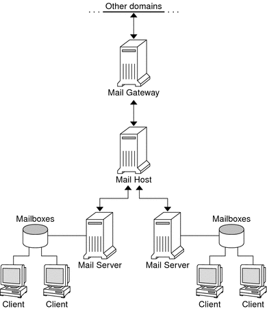

|
|||||||||||||||||
|
Part I Network Services Topics Part II Accessing Network File Systems Topics 4. Managing Network File Systems (Overview) 5. Network File System Administration (Tasks) 6. Accessing Network File Systems (Reference) 8. Planning and Enabling SLP (Tasks) 10. Incorporating Legacy Services Other sendmail Information Sources Part V Serial Networking Topics 15. Solaris PPP 4.0 (Overview) 16. Planning for the PPP Link (Tasks) 17. Setting Up a Dial-up PPP Link (Tasks) 18. Setting Up a Leased-Line PPP Link (Tasks) 19. Setting Up PPP Authentication (Tasks) 20. Setting Up a PPPoE Tunnel (Tasks) 21. Fixing Common PPP Problems (Tasks) 22. Solaris PPP 4.0 (Reference) 23. Migrating From Asynchronous Solaris PPP to Solaris PPP 4.0 (Tasks) 25. Administering UUCP (Tasks) Part VI Working With Remote Systems Topics 27. Working With Remote Systems (Overview) 28. Administering the FTP Server (Tasks) 29. Accessing Remote Systems (Tasks) Part VII Monitoring Network Services Topics |
Introduction to the Components of Mail ServicesMany software and hardware components are required to establish a mail service. The following sections give a quick introduction to these components. These sections also provide some of the terms that are used to describe the components. The first section, Overview of the Software Components, defines the terms that are used when discussing the software parts of the mail delivery system. The next section, Overview of the Hardware Components, focuses on the functions of the hardware systems in a mail configuration. Overview of the Software ComponentsThe following table introduces some of the software components of a mail system. Refer to Software Components for a complete description of all of the software components.
Overview of the Hardware ComponentsA mail configuration requires three elements, which you can combine on the same system or provide in separate systems.
If users are to communicate with networks outside your domain, you must also add a fourth element, a mail gateway. Figure 12-1 shows a typical electronic mail configuration, using the three basic mail elements plus a mail gateway. Figure 12-1 Typical Electronic Mail ConfigurationEach element is described in detail in Hardware Components. |
||||||||||||||||
|